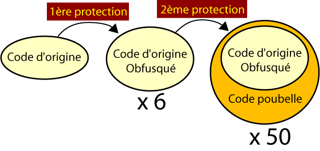
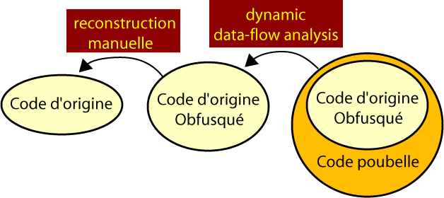

Date de publication : 20 avril 2008 00h40
Auteur : BeatriX
1.Introduction
Je propose dans cet article d'étudier un petit binaire lourdement protégé par de l'obfuscation. Quand je parle d'obfuscation, je parle ici d'obfuscation du code de type "insertion de code". Je détaillerai plus tard ce que ce terme couvre. Vous ne trouverez aucune obfuscation de type "crypté", c'est à dire qui contient une partie de code cryptée qui est décryptée à la volée. Vous ne trouverez également pas de mutation de code sur le code source. Ceci signifie qu'une fois le "garbage code" supprimé, il reste le code d'origine en clair. On trouvera cependant un léger réagencement du code, c'est-à-dire que le code source a été modifié en réordonnant les procédures (où alors c'est YoleJedi qui code comme ça :) ).
Il existe plusieurs approches pour analyser et se défaire d'une obfuscation. On peut analyser le binaire de façon statique avec un désassembleur (IDA par excellence) ou de façon dynamique avec un traceur, un debuggueur ou un émulateur.
Une fois l'approche choisie, on attaque l'obfuscation de façon selective. On peut attaquer par une étude des contenus des registres et de la mémoire ainsi qu'une recherche des instructions qui opèrent sur la mémoire (appelé data-flow analysis). On peut également attaquer par une étude des "directions" prises par le programme ( appelé control-flow analysis). J'ai essayé de façon empirique de mettre en place des techniques d'attaques qui se sont avérées plus ou moins fructueuses. Je précise ici que suis assez novice en matière de "désobfuscation". Après avoir lu un article de Wroblewski intitulé "General Method of Program Code Obfuscation" qui m'a beaucoup impressionné, je me suis rendu compte que ce que j'avais mis en place avec un peu de bon sens existait déjà depuis très longtemps et était déjà bien inventorié. Voici ce que Wroblewski propose pour résumer les techniques d'attaques connues :
- 1. Identifier les "opaque constructs"
- C'est la technique d'obfuscation problématique même lorsqu'on fait l'analyse en dynamique
- 2. Identifier l'obfuscation par l'usage d'un dictionnaire de "patterns"
- C'est sans nul doute ce que Yolejedi attendait pour ce genre de défi. Il s'agit de nopper l'obfuscation en réalisant une reconnaissance par comparaison de patterns. J'ai complètement ignoré cette façon de procéder.
- 3. Identifier l'obfuscation par "program slicing"
- C'est la grosse surprise pour moi. Ce que j'ai appelé module de "back-stepping" pour mon émulateur est en fait une technique de program slicing. Il s'agit ici , à partir d'un noeud du programme, de retrouver en amont les portions de code utiles qui aboutissent à ce noeud. Dans ce cas précis, on parle de "backward slice". Il existe bien évidemment le "forward slice" que je n'ai pas du tout utilisé.
- 4. Faire une analyse statistique du code exécuté
- La encore, c'est une technique que j'ai utilisée naïvement. J'ai réalisé des filtrages d'instructions en comptant les instructions.
- 5. Evaluer par une analyse du data-flow
- Dans ce genre de technique, on se concentre sur les valeurs contenues dans les registres et dans les variables locales. Très utile pour comprendre le cheminement d'une routine.
- 6. Identifier et évaluer le "stealth code"
- Cette technique, un peu absente dans l'article de Wroblewski est baptisée ainsi par Balakrishnan et Schulze dans leur article "Code Obfuscation Literature Survey". Nous verrons plus tard de quoi il s'agit.
Suivant l'approche choisie, les attaques définies, l'obfuscation est plus ou moins résistante. En termes plus concrets, certaines techniques d'obfuscation sont invisibles et donc inopérantes pour une certaine approche alors qu'elles sont quasi insolubles dans un temps raisonnable avec une autre approche.
Ceci explique pourquoi on a du mal à donner une taxonomie claire et universelle de l'obfuscation. L'obfuscation est créée par le développeur pour mettre en échec une certaine forme d'attaque. Elle peut donc être forte ou complètement inefficace suivant la façon dont elle est traitée par l'attaquant.
En ce qui concerne YO-bfuscator1, il est clair que Yolejedi a mis en place des techniques d'obfuscation efficaces contre l'analyse statique et non contre l'analyse dynamique. il a néanmoins pris soin de rendre les analyses de data-flow et de control-flow difficiles. Nous verrons cependant qu'il reste de jolies failles sur lesquelles nous pouvons agir pour retrouver l'aiguille dans la botte de foin.
Pour ma part, j'ai adopté une approche dynamique à l'aide d'un émulateur "maison" équipé de fonctions de filtrage d'instructions ou de familles d'instructions ainsi que d'un module de "back-stepping". J'ai exploité cinq des six techniques d'attaque précédemment citées !
Du point de vue de l'approche dynamique, on peut modéliser l'obfuscation de ce binaire de la façon suivante :

Le code initial a d'abord était obfusqué de façon a être moins lisible (c'est que nous appellerons plus loin une "complex insertion"). Le code protégé est globalement 6 fois plus gros que le code avant mise en place de la première protection. Puis, ce nouveau code a été enrobé d'une seconde couche d'obfuscation (garbage code que nous appellerons "simple insertion") afin de rendre le tout indigeste. Cette fois, le code est environ 50 fois plus gros que le code obfusqué, soit 300 fois plus gros que le code initial !
Je propose ici de débarasser le binaire de la 2ème protection (simple insertion) et donc de retrouver le code d'origine modifié par la première protection (complex insertion). J'illustre ceci de la façon suivante :

La première protection peut facilement être supprimée à 50% de façon automatique. Le reste de cette première protection, qui ne représente que 0,4% de l'obfuscation initiale peut aisément se supprimer à la main. Pour ce qui est de la seconde protection, soit environ 98 % de l'obfuscation complète, j'exécuterai la cible sous environnement contrôlé et j'analyserai le code instruction par instruction. Voici un petit exemple :
Code d'origine (3 lignes)
push 0h call 401078h =========> GetModuleHandleA : Main mov dword ptr [49379Ch], eax
Code d'origine obfusqué par complex insertion (9 lignes)
0056C763 push 0h 0056DE51 call 401078h =========> GetModuleHandleA : Main 0056DE56 xchg eax, esi 0056E40C inc esi 0056E8EE mov edi, esi 0056E8FF xchg ebp, edi 0056EECF xchg eax, ebp 0056EED8 dec eax 0056EED9 mov dword ptr [49379Ch], eax
Les 6 lignes de junk ajoutées sont très simples à comprendre et à optimiser. Nous verrons néanmoins que ce code, obtenu par l'intermédiaire du moteur de back-stepping, peut également être éliminé de façon automatique. Voici maintenant le code dans son ensemble équipé des deux protections :
Code d'origine obfusqué + simple insertion (98 lignes)
0056C763 push 0h 0056DE51 call 401078h =========> GetModuleHandleA : Main 0056DE56 xchg eax, esi 0056DE57 jmp 56DFA4h 0056DFA4 jno 56E0EEh 0056E0EE jmp 56E1A5h 0056E1A5 jne 56E15Ch 0056E1A7 jmp 56E1C9h 0056E1C9 jmp 56E3ABh 0056E3AB jns 56E0F4h 0056E0F4 jmp 56E065h 0056E065 jnl 56E18Dh 0056E18D jmp 56E28Eh 0056E28E jnp 56E3D0h 0056E294 jp 56DF0Fh 0056DF0F jmp 56E267h 0056E267 jng 56DF97h 0056DF97 jmp 56E22Fh 0056E22F jc 56E107h 0056E235 jmp 56E1B0h 0056E1B0 jmp 56E057h 0056E057 jna 56E36Ah 0056E36A jmp 56E409h 0056E409 push ebx 0056E40A neg eax 0056E40C inc esi 0056E40D xchg ebx, edx 0056E40F call 56E415h 0056E415 mov dword ptr [esp], ebp 0056E418 xor ebp, eax 0056E41A xchg edi, ecx 0056E41C shl ebp, 47h 0056E41F inc edx 0056E420 add ebp, ebx 0056E422 neg edi 0056E424 lea ebp, dword ptr [ebp+57A8E5h] 0056E42A inc ebx 0056E42B shl ebp, 0B5h 0056E42E jmp 56E5DFh 0056E5DF js 56E7D0h 0056E7D0 jmp 56E4A9h 0056E4A9 jng 56E4D9h 0056E4D9 jmp 56E87Eh 0056E87E jne 56E693h 0056E693 jmp 56E8C0h 0056E8C0 jno 56E80Bh 0056E80B jmp 56E73Eh 0056E73E jl 56E82Ch 0056E82D jmp 56E474h 0056E474 jnp 56E5D2h 0056E47A jp 56E5B6h 0056E5B6 jmp 56E64Fh 0056E64F ja 56E62Bh 0056E651 jmp 56E723h 0056E723 jmp 56E83Ah 0056E83A jc 56E87Ah 0056E87A jmp 56E8DEh 0056E8DE inc dword ptr [esp] 0056E8E1 lea ecx, dword ptr [ecx+ebx] 0056E8E4 mov dword ptr [esp+4h], edi 0056E8E8 lea ebp, dword ptr [ebp+451A46h] 0056E8EE mov edi, esi 0056E8F0 lea esi, dword ptr [esp-2h] 0056E8F4 mov ebp, dword ptr [esi] 0056E8F6 pop esi 0056E8F7 shl ebp, 70h 0056E8FA pop ebp 0056E8FB xchg edx, ebx 0056E8FD xchg ebp, ecx 0056E8FF xchg ebp, edi 0056E901 xchg eax, esi 0056E902 dec ebx 0056E903 sub edi, edx 0056E905 dec eax 0056E906 jmp 56E91Ch 0056E91C jnc 56EAF8h 0056EAF8 jmp 56ED23h 0056ED23 jns 56EA98h 0056EA98 jmp 56E971h 0056E971 jno 56EDE0h 0056EDE0 jmp 56EDA1h 0056EDA1 jnl 56EA53h 0056EA53 jmp 56EE85h 0056EE85 jg 56EB32h 0056EB32 jmp 56EEA6h 0056EEA6 jp 56E9F3h 0056E9F3 jmp 56EC1Bh 0056EC1B ja 56EEC1h 0056EEC1 jmp 56EA29h 0056EA29 jne 56EE6Eh 0056EE6E jmp 56EECFh 0056EECF xchg eax, ebp 0056EED0 not esi 0056EED2 sub esi, 0FFFFFFFFh 0056EED5 neg ecx 0056EED7 dec edx 0056EED8 dec eax 0056EED9 mov dword ptr [49379Ch], eax
Je vais commencer par présenter ma démarche en utilisant quelques exemples issus de ce crackme. Je proposerai ensuite une vision globale du crackme en essayant d'éclairer les techniques d'obfuscation utilisées. Enfin, je donnerai une version du crackme nettoyée complètement du junk.
Copyright (C)- FRET (2008)